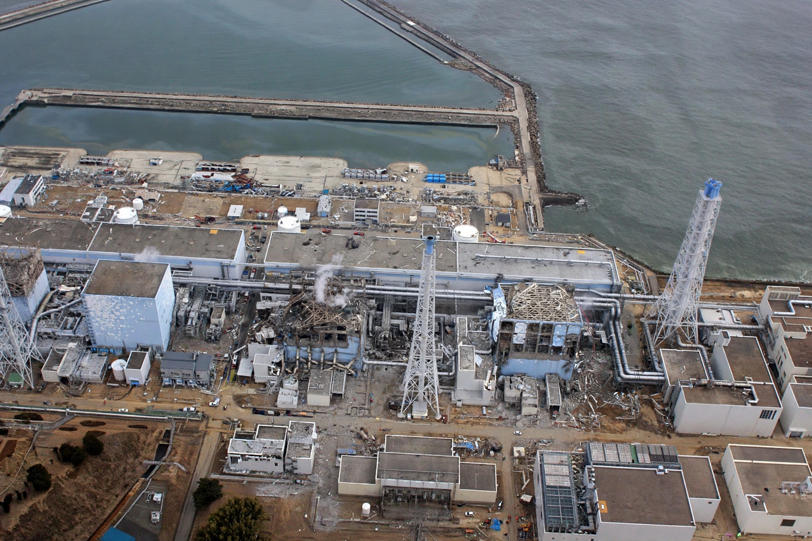

Fukushima nuclear accident

The Fukushima nuclear accident began on 11 March 2011 at the Fukushima Daiichi Nuclear Power Plant in Japan, when the magnitude-9.0 Tōhoku earthquake and the tsunami that followed knocked out all power and cooling to the plant. Over the following days, three reactor cores melted, hydrogen explosions wrecked the reactor buildings, and radioactive material was released to air and sea.
It is rated level 7, the maximum, on the International Nuclear Event Scale — the only accident besides Chernobyl at that level — though its releases and health consequences were far smaller than Chernobyl's.
Sequence
The reactors shut down automatically at the earthquake, but the tsunami, far higher than the plant's sea wall, flooded the emergency diesel generators and switchgear in the basements. In the ensuing station blackout, cooling failed; fuel in Units 1, 2 and 3 overheated and melted, zirconium cladding reacted with steam to generate hydrogen, and explosions destroyed the upper structures of Units 1, 3 and (via shared venting) 4. Fire and damage at spent-fuel pools added to the crisis.
Authorities evacuated residents in expanding zones out to 20 kilometres; at the peak well over 150,000 people were displaced. Land and marine contamination required years of decontamination, food monitoring and fishing restrictions.
Consequences
No deaths from radiation exposure among the public have been attributed to the accident, and UNSCEAR assessments find no discernible increase in cancer rates expected; the disaster's toll was borne through the earthquake and tsunami themselves (about 18,000 dead or missing) and through the evacuation, which caused well over a thousand disaster-related deaths, mostly of elderly people. Japan shut down its reactor fleet; only some units have since restarted, amid lasting political division. Decommissioning Daiichi is planned to take 30–40 years, and the release of treated water into the Pacific, begun in 2023, remains diplomatically contentious.
The accident hardened global nuclear regulation (stress tests, filtered vents, mobile backup power) and shifted energy debates in Germany, which completed its nuclear phase-out in 2023, and elsewhere. See Nuclear power and Environmental disaster.
See also: Nuclear power · Environmental disaster · Tsunami · Earthquake · Three Mile Island accident